Na Drini ćuprija
Ivo Andrić - Remek djelo o historiji i ljudima.
Pročitaj višeIstražite našu kolekciju romana i novela. Trenutno dostupno: 22 naslova.
Ivo Andrić - Remek djelo o historiji i ljudima.
Pročitaj više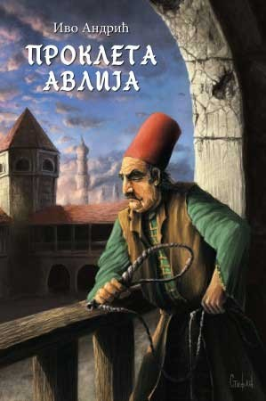
Ivo Andrić - Priča o zatvoru i ljudskoj sudbini.
Pročitaj više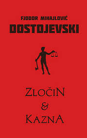
Fjodor Dostojevski - Psihološka analiza zločina.
Pročitaj više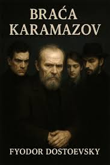
Fjodor Dostojevski - Filozofski roman o vjeri i moralu.
Pročitaj više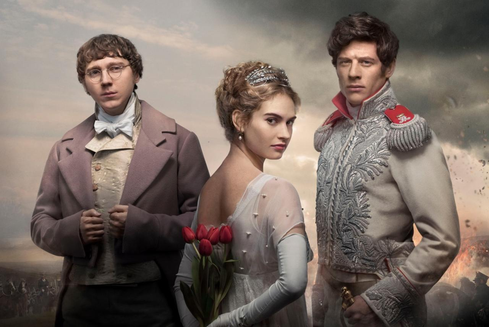
Lav Tolstoj - Epska priča o ratu i društvu.
Pročitaj višeLav Tolstoj - Tragična ljubavna priča.
Pročitaj više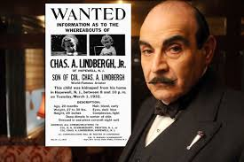
Agatha Christie - Klasik detektivskog žanra.
Pročitaj više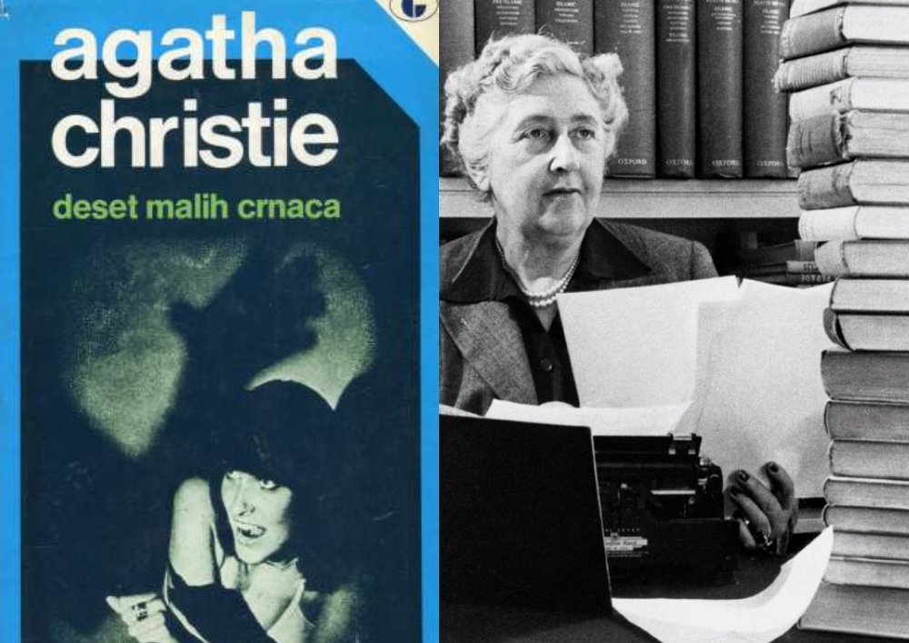
Agatha Christie - Misterija izolovanog ubistva.
Pročitaj više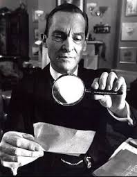
Arthur Conan Doyle - Kultni detektiv.
Pročitaj višeArthur Conan Doyle - Misterija sa natprirodnim elementima.
Pročitaj više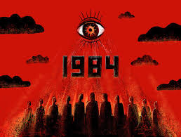
George Orwell - Distopijska vizija budućnosti.
Pročitaj više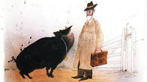
George Orwell - Alegorija o društvu i vlasti.
Pročitaj više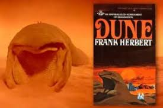
Frank Herbert - Ep o pustinjskoj planeti.
Pročitaj više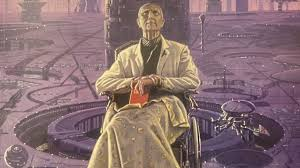
Isaac Asimov - Naučna fantastika o civilizaciji.
Pročitaj više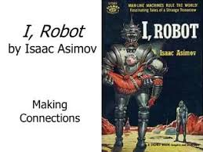
Isaac Asimov - Priče o robotici i etici.
Pročitaj više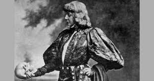
William Shakespeare - Tragedija o osveti.
Pročitaj više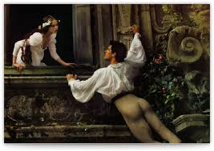
William Shakespeare - Tragična ljubav.
Pročitaj više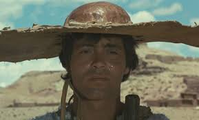
Sofoklo - Antička tragedija.
Pročitaj više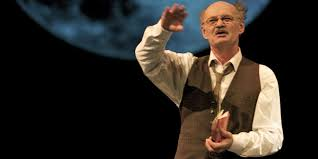
Arthur Miller - Kritika američkog sna.
Pročitaj više